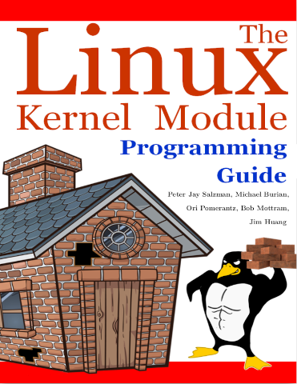

Перед вами последняя версия пособия по программированию модулей ядра Linux, вышедшего 2 июля 2022 года. Это пособие вы можете смело воспроизводить и изменять в соответствии с условиями Open Software License v 3.0.

В первой части мы разберём, что такое модули ядра, рассмотрим необходимые подготовительные этапы для их создания и в завершении по традиции напишем первый простейший модуль «Hello world», попутно разобрав лицензирование, передачу аргументов командной строки и прочие нюансы.